注意請把製作過程分 DWG 儲存個別檔案，方便日後修改模型用。
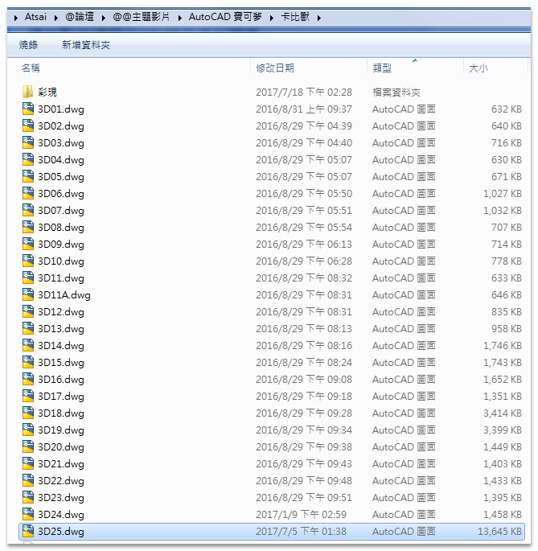
建模步驟
1
插入 IMAGE，雲形線描繪立面輪廓。（圖面畫圓輔助定位，依照各斷面 3D 組合用）
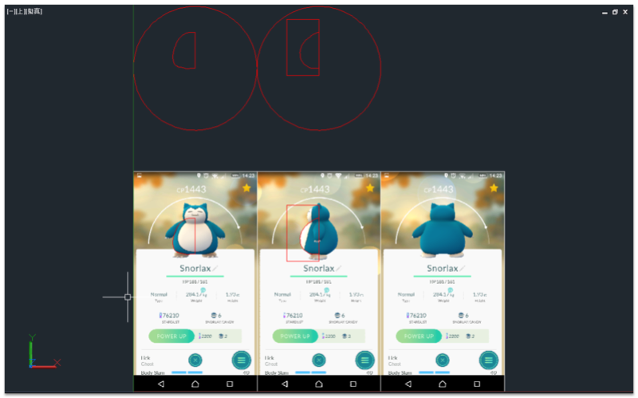
2
陣列 4 個立面輪廓，補上身體上視圖斷面（黃色橢圓）。（雲形線輪廓可以再隨時調整）
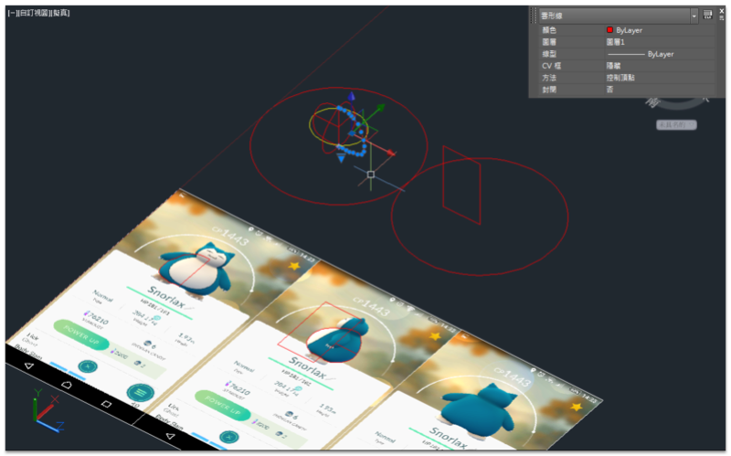
3
斷面混成，使用 [導引(G)] 選項。
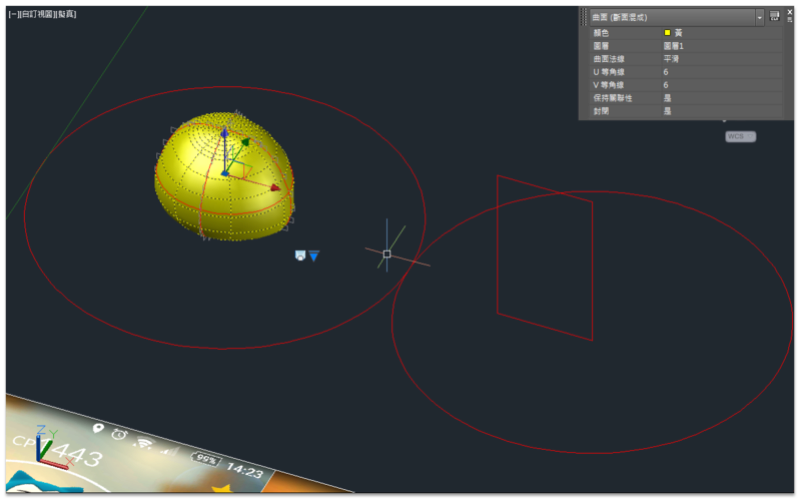
4
頭部分按照身體步驟完成。
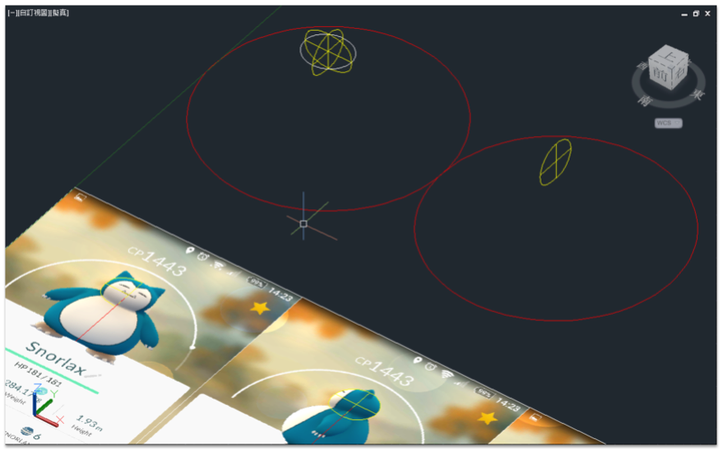
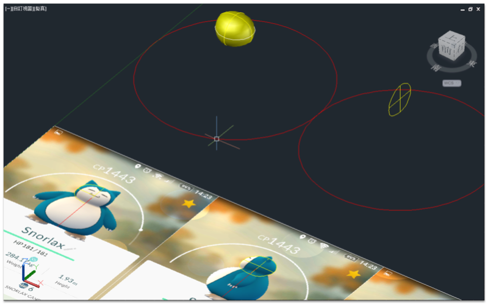
5
頭及身體聯集，圓角脖子部分（頭及身體）。（有時會因為建模順序及精確度等衝突導致圓角失敗，需要重新製作頭或身體）
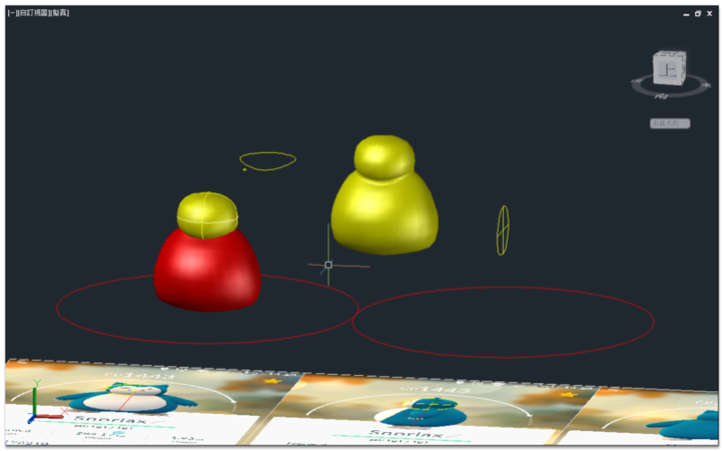
6
7
8
手及腳輪廓，迴轉完成（封閉輪廓的建立模式 = 曲面），SURFSCULPT 指令將曲面轉換為實體。（轉為實體方便布林運算）
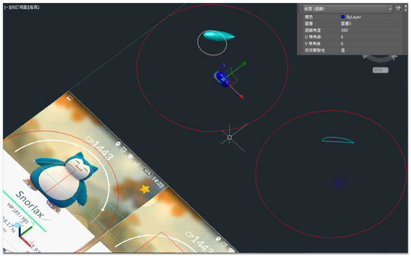
9
依照圖面畫輔助圓，組合 3D 零件模型（頭、身體及四肢）。
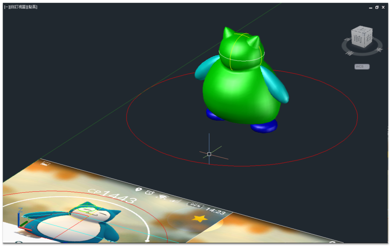
10
圓角細部（身體及四肢）。
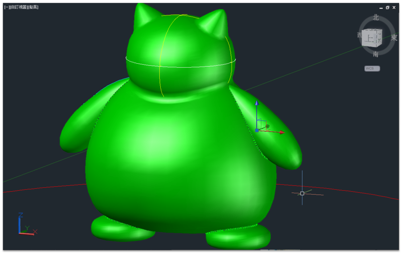
11
12
布林運算，這部份做二次（差集及交集）。
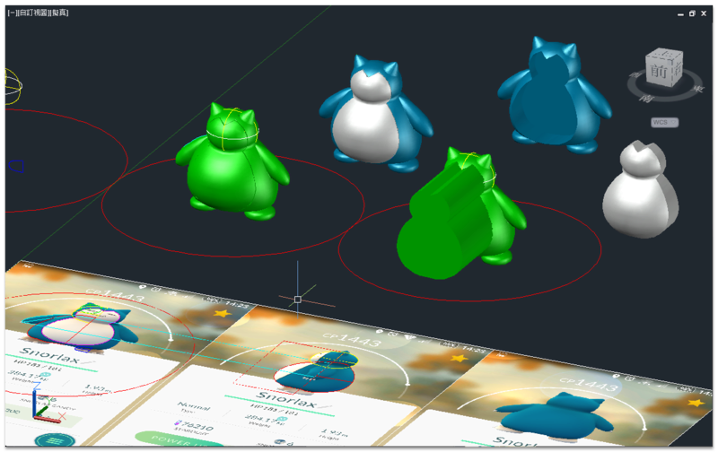
13
製作爪子，耳朵輪廓，斷面混成。
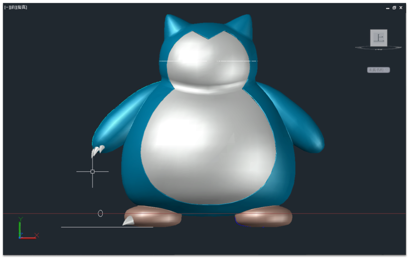
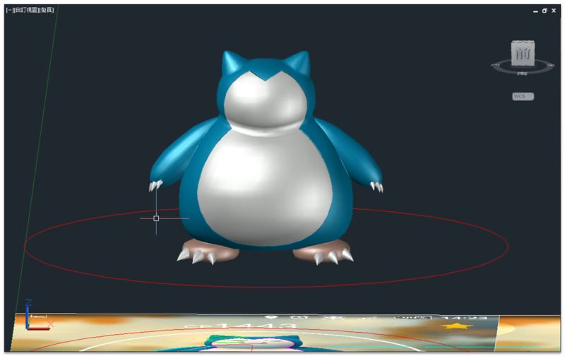
14
眼睛嘴巴牙齒輪廓，布林運算，這部份做二次（差集及交集）。
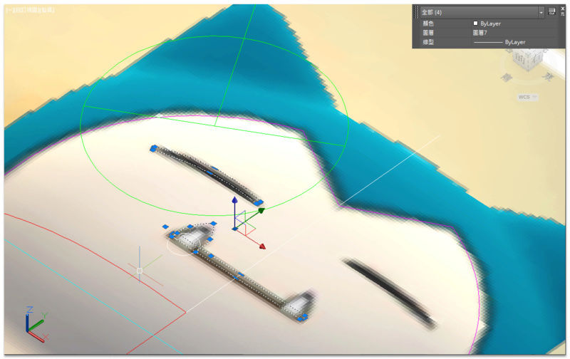
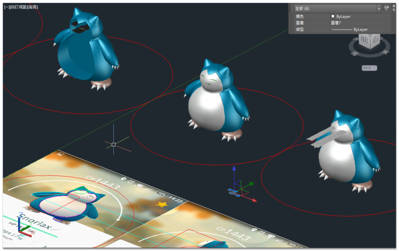
15
16
整體完成，可以再細部微調。
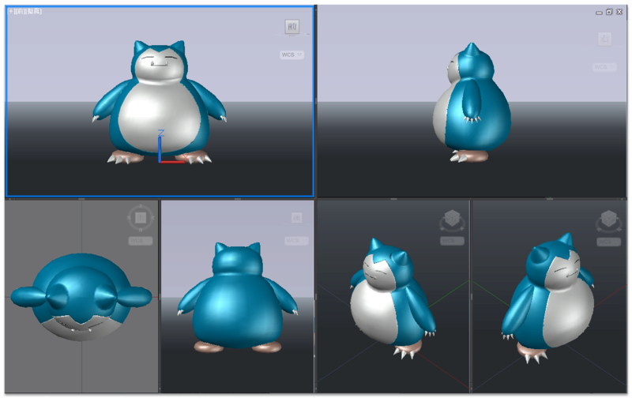
17
完成一個主體原型模型之後，日後可以做出其他變化。
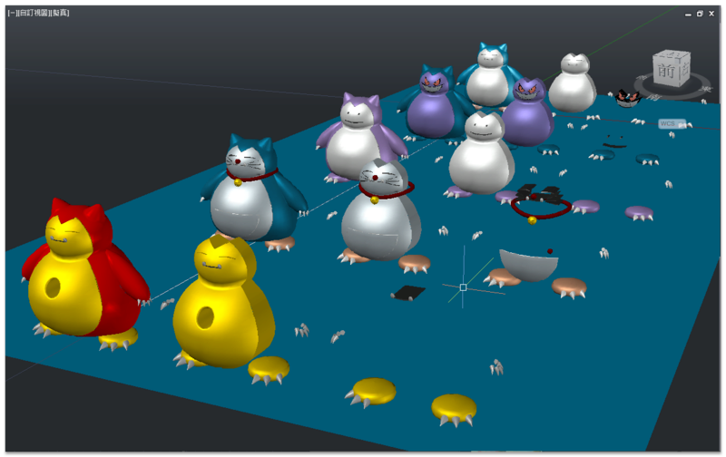
18
最後一樣使用 AutoCAD 貼材質彩現（渲染），超有成就感的 ^_^
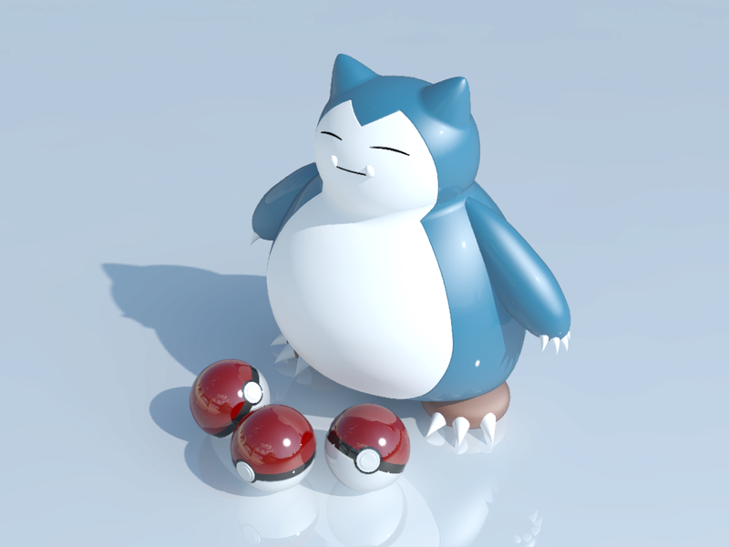
我的作品傳送門：AutoCAD 3D Pokémon Go 卡比獸-進化了